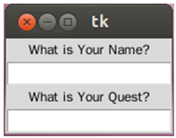
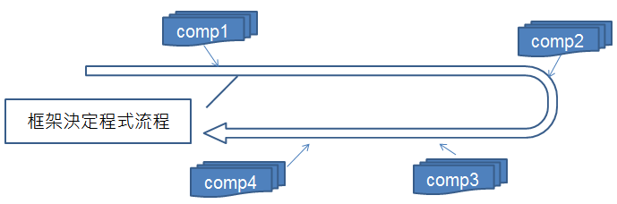
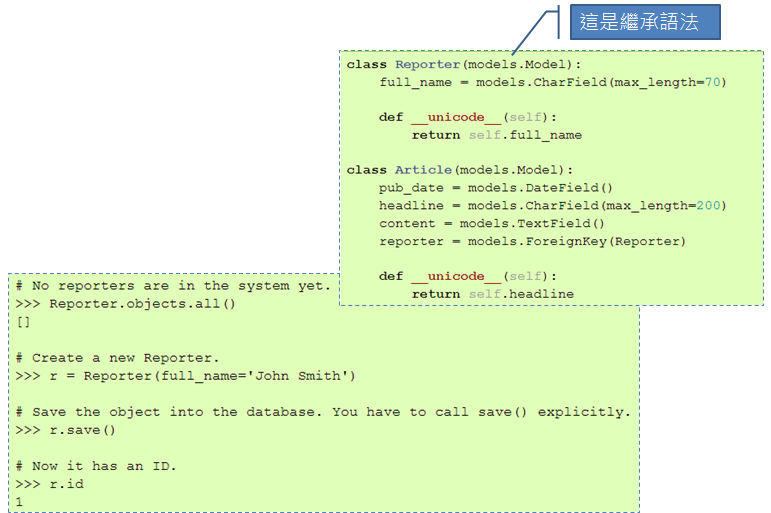
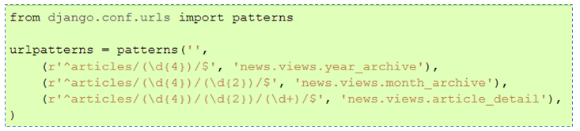
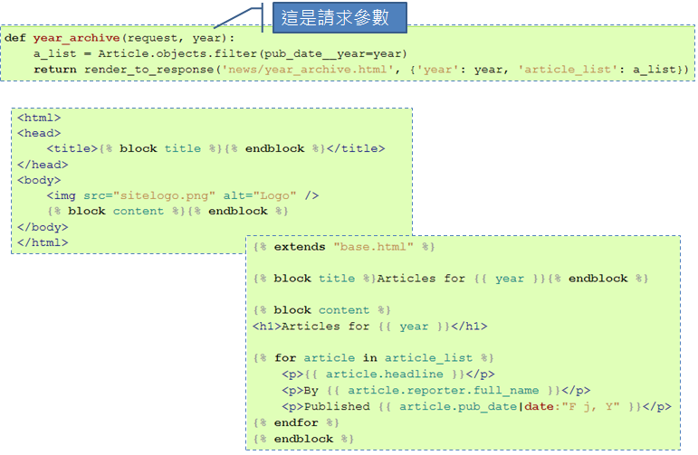
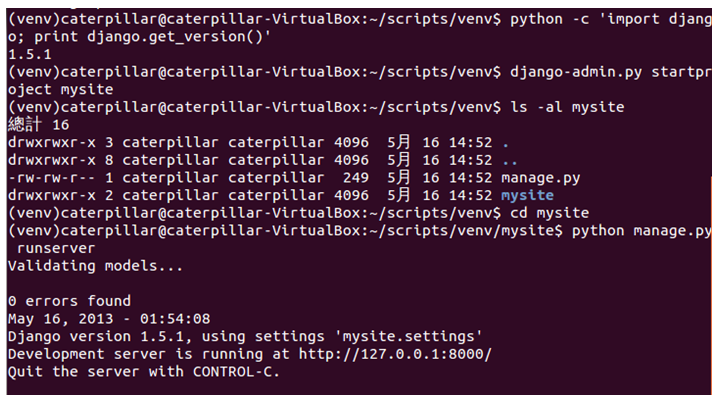
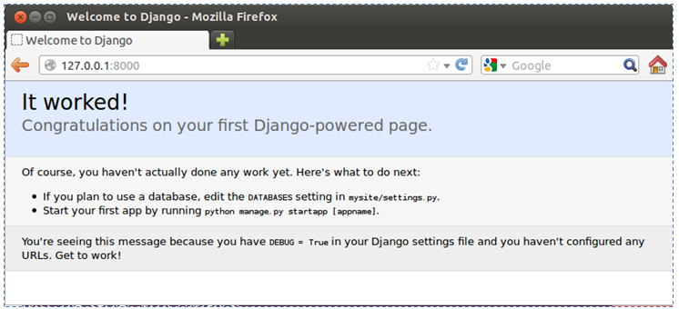

這堂課開始，我們要來看看如何使用 Python 來撰寫 Web 應用程式，使用的框架（Framework）是 Django。什麼是框架？它跟程式庫（Library）有何不同？
程式庫 vs 框架
從課程一開始，你就一直在使用程式庫，你的程式流程一直在你的控制之內，你決定了程式何時要使用程式庫來詢問使用者問題、何時要讀取使用者回應、何時要處理結果 … 就像是以下的程式中，你決定在流程中使用程式庫中的raw_input 函式、自定義的 process_name 函式以及 process_quest 函式等 …
name = raw_input('What is your name?')
process_name(name)
quest = raw_input('What is your quest?')
process_quest(quest)當你開始使用框架，你會發現不是你決定程式流程，你會定義函式，由框架決定何時來呼叫你定義的函式。流程的控制權被反轉了，現在是框架在定義流程，在既定的流程中框架會呼叫你的函式，而不是你來呼叫框架。例如，你會使用 GUI 框架 Tkinter 來組合這樣的視窗 …
{kind=link}

你需要依框架的要求進行畫面組合，並安排好等待被呼叫的一些自定義函式，像是
process_name 之類的 … 例如 …
import Tkinter
top = Tkinter.Tk()
Tkinter.Label(top, text='What is Your Name?').pack()
name_var = Tkinter.StringVar()
name_entry = Tkinter.Entry(top, textvariable=name_var)
name_entry.pack()
name_entry.bind('', lambda event: process_name(name_var))
Tkinter.Label(top, text='What is Your Quest?').pack()
quest_var = Tkinter.StringVar()
quest_entry = Tkinter.Entry(top, textvariable=quest_var)
quest_entry.pack()
quest_entry.bind('', lambda event: process_name(quest_var))
Tkinter.mainloop()當使用者作出動作，框架會有既定的處理流程，並在對應的時機點呼叫你定義的函式。
IoC（Inversion of Control）
在談到框架時，經常會聽到 IoC 這個縮寫名稱，也就是 Inversion of Control，既控制權反轉，什麼控制權被反轉了？誰能決定程式的流程！ 使用程式庫的話，流程的控制是這樣的 ...
藍色部份是你可以自行掌控的部份，你決定程式流程走向，並在過程中必要時機，引用各種程式庫！ 使用框架的話，流程的控制是這樣的 …
{kind=link}

藍色部份是你可以自行掌控的部份，也就是框架規範下可進行的元件實作，框架在本身定義的流程下適當時機，會呼叫你的元件實作。
我們需要使用框架嗎？
應用程式開發時是否需要使用框架，有很多考量點 … 然而簡單來說 ... 使用程式庫時，開發者會擁有較高的自由度；使用框架時，開發者會受到較大的限制。限制？有哪些限制？很多 … 是否需要使用框架？是否要遵循框架規範的流程？使用框架是基於技術考量？還是基於商業上的考量？（嗯 ... 因為這框架是採購案中被綁在一起的 ... 上頭叫我們要用我們就得用？）... 這幾個問題都是必須想想看的 ...
股市有句名言，好的老師帶你上天堂，不好的老師帶你住套房。用框架時可以這麼想 … 好的框架帶你上天堂，不好的框架讓你下地獄 ... XD
Django 起步走
這堂課會使用 Django 這個框架來進行 Web 應用程式的練習，在 Python 的世界中，如果你願意遵守且認同 Django 定義的流程、語義等，那你就會覺得這是個高階、快速開發、簡潔的 Web 框架。在官方網站上列出了一些特性：- 物件關聯（Object-relational）模型對應
- 內建管理介面
- 優雅的 URL 設計
- 頁面樣版系統
- 快取系統
- 國際化（Internationalization）
{kind=link}

這是 URL 設計時的方式，使用正則表示式來設計 URL …
{kind=link}

畫面（View）設計與樣版系統 ...
{kind=link}

以下透過練習直接來準備一下 Django 專案 …
練習 9：建立 Django 專案
在實際進行這門課程時，使用的 Django 版本是 1.5.1，因而這邊的示範是以此版本為主 … 這邊會建立一個虛擬環境，並透過 pip 來安裝 Django，指令如下：
~/scripts$ virtualenv --distribute venv
~/scripts$ cd venv
~/scripts/venv$ source bin/activate
~/scripts/venv$ pip install Django==1.5.1
~/scripts/venv$ python -c 'import django; print django.get_version()'
~/scripts/venv$ django-admin.py startproject mysite
~/scripts/venv$ ls -al mysite
~/scripts/venv$ cd mysite
~/scripts/venv$ python manage.py runserverPS. 在 2016 年 1 月為某單位準備此課程時，執行
pip install Django==1.5.1 與 django-admin.py startproject mysite 後，mysite 中沒有 manage.py，安裝 Django 1.6.11 就無此問題。指令中透過
django-admin.py startproject mysite 建立了一個 Django 專案為 mysite，完成 python manage.py runserver 指令後，你應該會看到 Django 開發時的簡單伺服器啟動了 ... {kind=link}

開啟你的瀏覽器，瀏覽 http://127.0.0.1:8000/，你應該要看到以下畫面 …
{kind=link}

這個專案中還有什麼呢？後面我們還會繼探討 ...